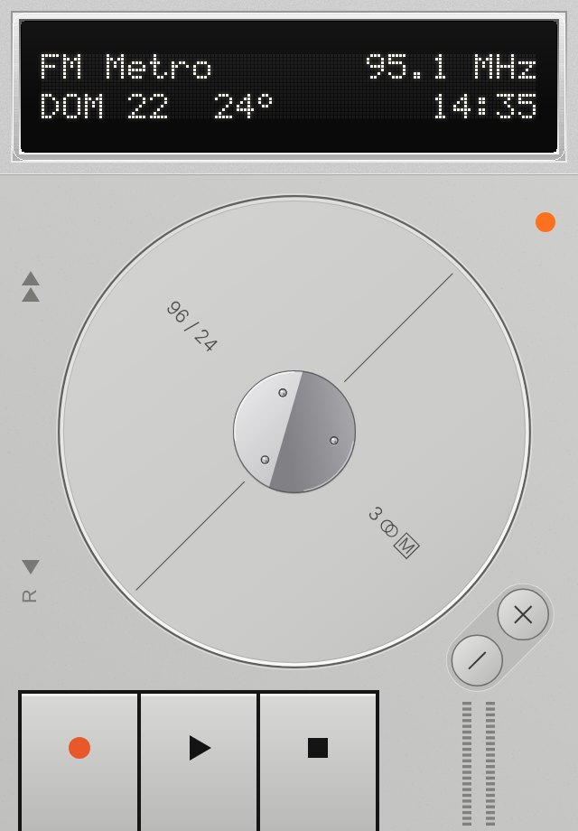
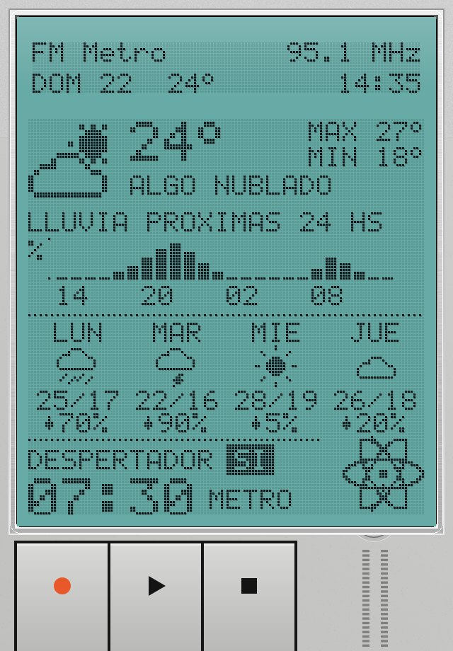
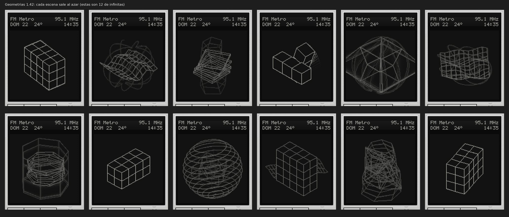

Radio para iPod
La Radio B&O como app de verdad para iPod touch 4 y iPhone 4S con iOS 6 y jailbreak: el disco, el tocadiscos con su display de puntos, los relojes y la consola de bolsillo.
VERSIÓN 1.42
Bajar RadioBO-1.42.debRecomendado · se instala con OpenSSH o Cydia
Bajar RadioBO-1.42.ipaAlternativa · necesita AppSync
Versión webLa de antes, sin instalar nada
LO NUEVO
- El display del tocadiscos, calado en la carcasa con marco de metal: arriba la banda, la radio y la frecuencia; abajo el día, la temperatura y la hora.
- Deslizándolo hacia abajo se abre hasta las teclas: el clima de ahora, la lluvia de las próximas 24 horas y el pronóstico de cuatro días.
- Radio despertador: a la hora elegida prende la radio que dejaste puesta.
- El átomo abre las geometrías: figuras 3D de alambre en isométrica, al azar, que nunca se repiten.
- Tres luces para el display (manteniéndolo apretado): negro, verde y turquesa.
- En los relojes, el modo noche solo oscurece el fondo.
CÓMO SE VE



CÓMO INSTALARLA
- El aparato tiene que tener iOS 6 con jailbreak y OpenSSH instalado desde Cydia.
- Bajá el
.deba la computadora y copialo al aparato (cambiáIP_DEL_IPHONEpor la que figura en Ajustes → Wi-Fi):scp -o HostKeyAlgorithms=+ssh-rsa -o PubkeyAcceptedAlgorithms=+ssh-rsa RadioBO-1.42.deb root@IP_DEL_IPHONE:/var/root/
- Instalala (si ya tenés una versión anterior, se instala encima):
ssh -o HostKeyAlgorithms=+ssh-rsa -o PubkeyAcceptedAlgorithms=+ssh-rsa root@IP_DEL_IPHONE "dpkg -i /var/root/RadioBO-1.42.deb && su -c uicache mobile"
- Listo: el ícono aparece en la pantalla de inicio.
La contraseña de fábrica de root es alpine. Si usás el .ipa, hace falta AppSync y un instalador de .ipa.